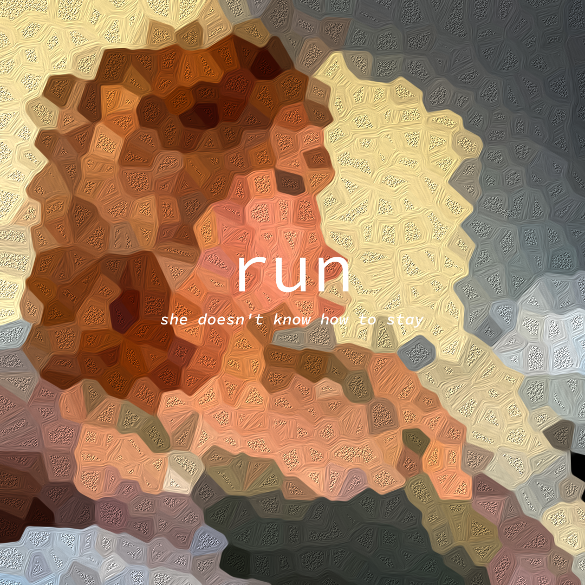

Hello World! Welcome to my page. My name is Rose, and I truly value education. I enjoy learning, finances, reading books, and I love people.

When I turned 18, I researched all about finances and how to
get my life straight.
My parents lived their life one
way, and I will live it another. I want to be better.
I learned all I could about credit cards, credit scores,
and negotiations.
I read books about trauma, one's self journey,
and any book that will serve its purpose and make me a better person.
A youtuber I watched to kick off my journey in finance was Graham Stephan. Then, I went ahead and joined facebook groups relolving around credit cards and maximizing rewards /cashback. Reddit pages such as r/personalfinance is a good place to start learning.
I've taught myself to speak 4 languages and am continuing to learn more as we speak (or as you read).
Ocassionally, I enjoy making music. I recently released my song "run" on streaming platforms.
I used to be a league degen. I am retired.
I enjoyed playing Minecraft minigames and playing modded minecraft.
I started playing Valorant in 2021. I definitely should quit.